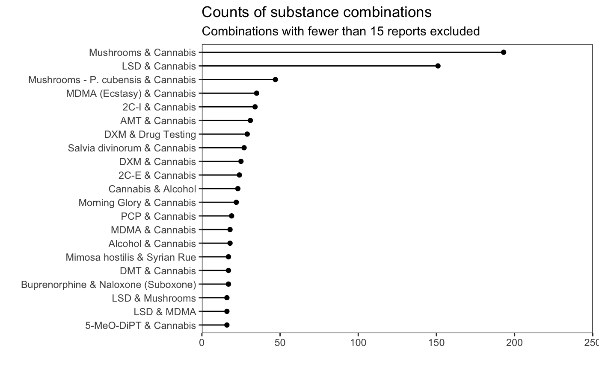

Erowid Reports
Matti Vuorre
2016-12-06
erowid is a data set of written reports of psychedelic experiences, from Erowid.org’s Experience Vaults.
About the Experience Vaults
“The Erowid Experience Vaults are an attempt to catalog the wide variety of experiences people have with psychoactive plants and chemicals as well as experiences with endogenous (non-drug) mystical experiences, drug testing, police interactions, deep experiences of connection to music, etc.” (Erowid Experience Vault)
tmasc::erowid
The erowid data set in tmasc contains written reports of some 24 thousand of these experiences, in a tidy tibble ready for text mining, visual, and statistical analyses in R (or other software.)
library(tmasc)
data(erowid)
head(erowid)## # A tibble: 6 × 14
## id title author gender age kg
## <int> <chr> <chr> <chr> <int> <dbl>
## 1 1 An Unforgettable Ride! Johnny Blaze <NA> NA NA
## 2 2 A Trip to Remember....If I Could! SpEcK M NA 91
## 3 3 Lost for 20 e4me&u M NA 66
## 4 4 Spectrum of Effects Elfstone M NA 82
## 5 5 2CT Heaven God <NA> NA 73
## 6 6 Blooming on Fry Street Great Ludwigo <NA> NA 70
## # ... with 8 more variables: year <int>, published <date>, rating <chr>,
## # views <int>, substance <chr>, text <chr>, erowid_warning <lgl>,
## # dosechart <list>One of the columns in the data frame is a list-column of data frames containing more detailed information about the substance(s) in each report, and can be used for more complex analyses. For the example here, we will drop this column for clarity. We’ll also drop all the rows (70) where no report text exists.
erowid <- select(erowid, -dosechart) %>%
filter(!is.na(text))Overview of the data
Year
Many, but not all, of the reports contain a timestamp of the year of the experience.
erowid %>%
ggplot(aes(x=year)) +
geom_histogram(binwidth = 1, col = "white") +
scale_x_continuous(breaks = seq(1960, 2010, 10)) +
scale_y_continuous(expand = c(0,0))
Gender and age
erowid %>%
group_by(gender, age) %>%
ggplot(aes(x=age)) +
geom_histogram(binwidth = 1, col="white", fill="black") +
scale_y_continuous(expand = c(0, 0)) +
facet_wrap("gender")
Substances
There are 7403 substances (or combinations).
erowid %>%
filter(!str_detect(substance, "&")) %>%
group_by(substance) %>%
count() %>%
filter(n > 100) %>%
ggplot(aes(x=reorder(substance, n), y = n)) +
geom_segment(aes(yend=0, xend = reorder(substance, n))) +
geom_point() +
coord_flip() +
scale_y_continuous(limits = c(0, 800), expand = c(0, 0)) +
labs(title = "Counts of substances", x = "", y = "",
subtitle = "Substances with fewer than 100 reports excluded")
Let’s also display a sample of the combinations:
erowid %>%
filter(str_detect(substance, "&")) %>%
group_by(substance) %>%
count() %>%
filter(n > 15) %>%
ggplot(aes(x=reorder(substance, n), y = n)) +
geom_segment(aes(yend=0, xend = reorder(substance, n))) +
geom_point() +
coord_flip() +
scale_y_continuous(limits = c(0, 250), expand = c(0, 0)) +
labs(title = "Counts of substance combinations", x = "", y = "",
subtitle = "Combinations with fewer than 15 reports excluded")
Reports
For example, let’s show the shortest report whose rating is “Highly Recommended”:
erowid %>%
filter(rating == "Highly Recommended") %>%
mutate(n = nchar(text)) %>%
arrange(n) %>%
.[1,] %>%
select(text) %>%
as.character() %>%
cat()
I took LSD at least 100 times between 1968-1972. Generally I approached it as a scientific experiment rather than a 'party drug'.
Thirty years later, those experiences stand out as some of the most remarkable of my life, although I am convinced that the benefits are NOT cumulative. That is, I probably derived no more benefit from doing it 100 times than if I had only done it 5 times. Perhaps even once was enough.
I was always left with the nagging feeling that I had come very close to grasping some ultimate truth, but I was never quite satisfied that I had really gotten there. Hence the need to go back to it over and over again.
Aside from discovering (or not) any ultimate truths, I certainly became aware of, and awed by, the incredibly intricate workings of the mind. It was truly fascinating to watch my mind working on many levels at the same time, creating all sorts of curious realities and unusual interpretations.
And therein lies the sleeping tiger of LSD. New interpretations of reality come flying from every direction, and not all of them are warm and cozy. When the world of all possibilities is unleashed it can get extremely frightening.
So even though I would make careful preparations to ensure positive LSD experiences (and in fact they WERE positive for the most part), there were more than a few times that it became paralyzingly clear that I was not in control of anything that was happening. In those situations one hopes to just 'go with the flow', but that can be easier said than done.